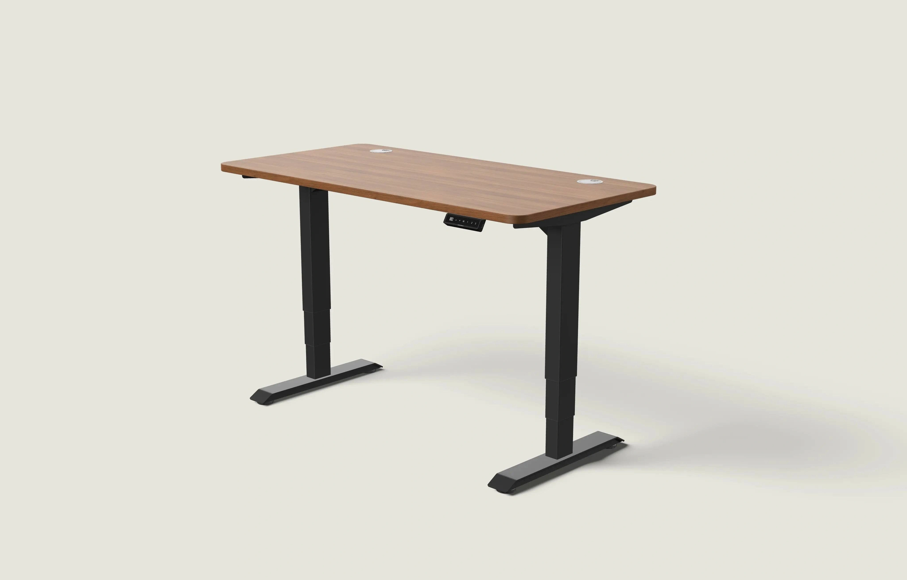
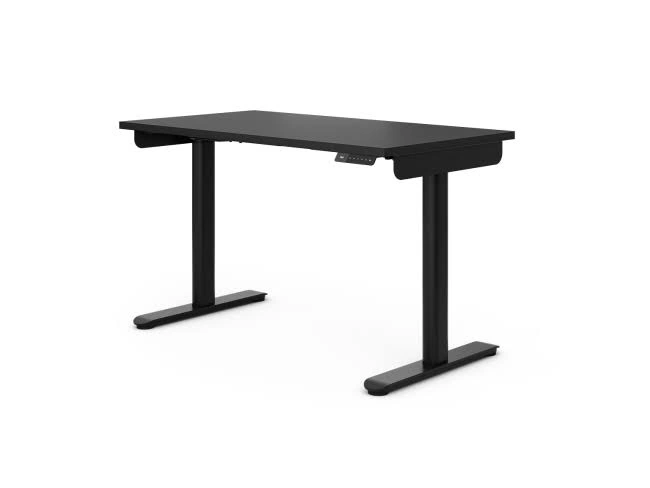

FW-C13 · 入门工作台，把基础讲清楚
评分：86/100，排名23，探索批。分项：{'product_30': 28, 'need_25': 22, 'reference_20': 15, 'difference_15': 11, 'feasibility_10': 10}。评分是测试潜力，不是效果预测。
产品：Economy 白色 120×60 cm。
用户：关注入门预算的首次购买者。
需求：能看清真实构造和核心功能，而非被夸大参数吸引。
卖点：基础电动升降、两组记忆位。
机会类型：二：已有卖点的视觉强化。
参考什么：参考无遮挡轮廓和低复杂度背景，不将其当作价格效果证明。
为什么：P5白色120×60真实在售；四片拼接板必须保留。
如何差异化：保留可见拼接方式，用一个主产品配尺寸与电动图示；价签只在重新核价后加入。
场景：浅蓝灰的朴素租房工作角，便携台灯和一本任务本。
构图：平视前方三分之四全景，桌面只放一台轻薄电脑，不用豪华软装暗示高配型号。
人物及动作：无人。
渠道：Google PMax 图片资产；Meta Feed。比例：1:1、1.91:1。德语主题：Dein Einstieg ins flexible Arbeiten。
资格依据：白色120×60在售变体；电动升降；两组记忆高度；规格和描述明确四片桌板拼接。
不能添加的宣称：不得生成一体板或宣传无拼接；页面高度72–116与“行程56 cm”存在算术冲突，不引用行程。
证据边界：有A类实际图片参考；具体原创场景和转化效果尚待测试。图片参考体现视觉方法，不构成竞品效果数据。需求证据：P5；价格仅为当前快照，长期知识不保存折扣。
参考原图

DESK-GOOG-008DESK-GOOG-008 · Desktronic · Google · 真实广告内的图像组件（非完整广告版式）
原广告来源。详情日期与德国地区已核验。

ERGO-GOOG-037ERGO-GOOG-037 · Ergotopia · Google · 真实广告内的图像组件（非完整广告版式）
原广告来源。德国日期筛选列表已核验；单条首次/最后日期未读取。